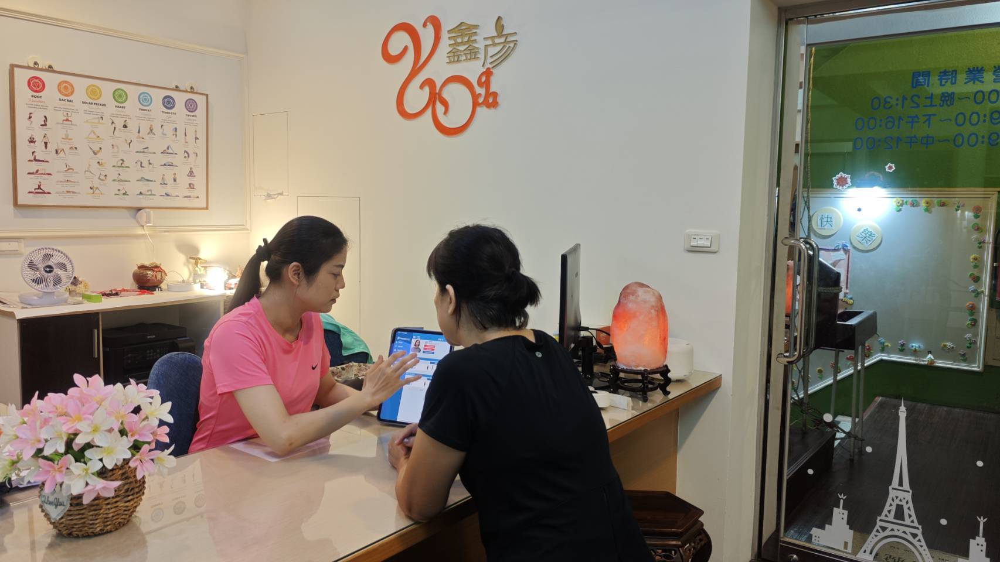
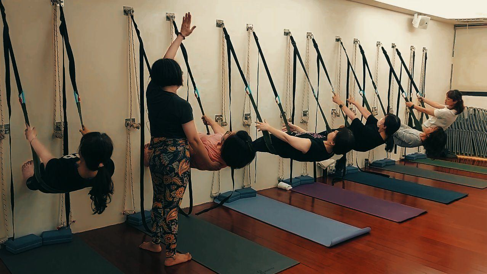
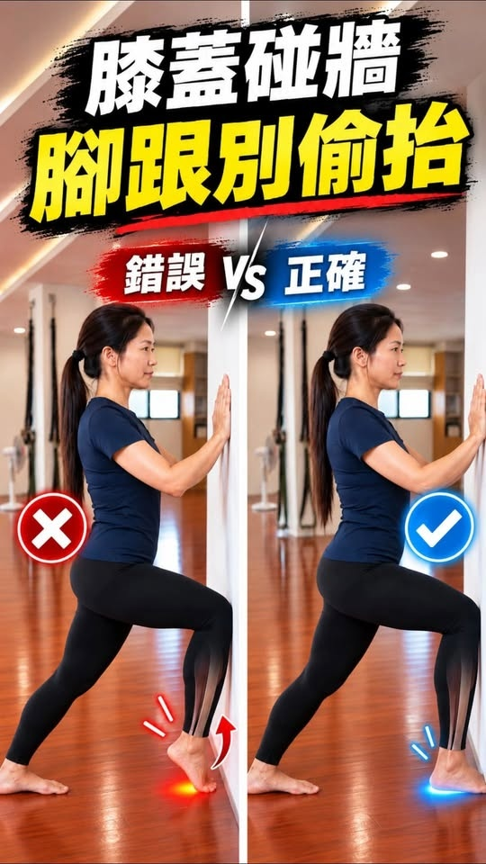
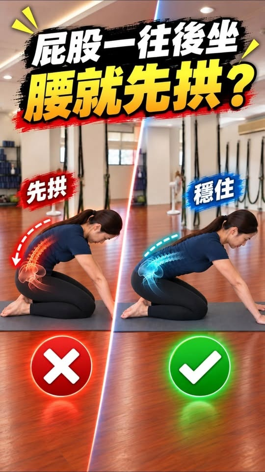
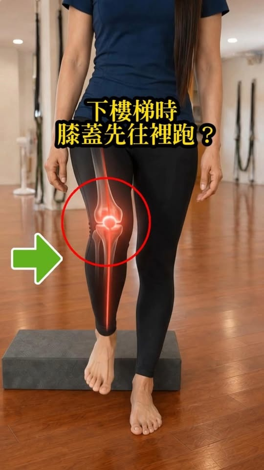
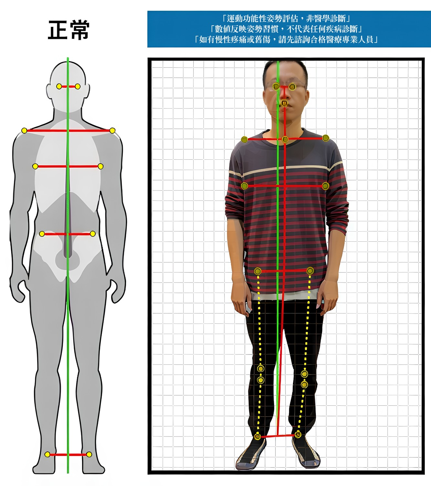

阿美老師與鑫彥特色
不是急著把動作做深，
而是先找到對的位置。
而是先找到對的位置。
壁繩瑜伽是鑫彥的特色。用牆上的繩子作為支撐，讓筋比較硬、怕受傷或第一次接觸的人，也能在可掌握的範圍裡練習。
壁繩課的招牌是阿美老師。學員評價提到她會引導大家用對肌肉部位，教學氣氛專業、活潑而輕鬆。
- 先檢測：先看見體態，再討論適合的練習方向。
- 壁繩借力：提供穩定支點，對僵硬、沒基礎的人較友善。
- 彈性安排：現有一對一與小團課，可依需求詢問。


有時候不是少做了哪個動作，而是你還不知道身體正在哪裡代償。
明明提醒自己挺胸，沒多久又縮回去。
按摩當下有鬆，回到日常又慢慢緊回來。
一想把姿勢撐好，腰、背或肩頸就先出力。
網路動作看了很多，仍不確定哪個適合自己。
點擊播放微型短影音，看看這 3 個最常見的日常代償，你中了哪幾個：

腳跟偷離地？足弓塌陷與小腿攣縮代償拆解
點擊播放 10 秒示範 ▶
骨盆翻轉與腰大肌張力卡死，腰背代償拆解
點擊播放 10 秒示範 ▶
膝內扣磨損髕骨？對齊腳趾與臀中肌啟動
點擊播放 10 秒示範 ▶這是運動功能性姿勢評估，非醫學診斷。AI 是分析工具，最後由老師當面解讀。

實際檢測報告範例拍攝並分析肩線、頭部前傾、脊椎與骨盆角度。
老師依檢測結果，幫你看懂問題可能出現在哪裡。
AI 體態檢測原價 NT$699，首次到店 NT$299，每人限一次。
想先知道現場會做什麼？查看完整檢測流程與現場照片，或先看 第一次上課，壁繩、小團課與一對一怎麼選。
以下摘自學員在 Google 公開發表的評價。
★★★★★「今天體驗 AI 檢測與調整，身體狀況沒有想像中的好，經過老師的調整，覺得肩頸放鬆了，腰部感覺比較鬆了，很棒的一次體驗。」
黃之柔 · Google 評論
★★★★★「用姿勢檢測來評估身體結構，讓我們進入課程後能以更標準的動作來學習，避免運動傷害產生，是很好的瑜珈運動館。」
徐芳芳 · Google 評論
★★★★★「阿美老師很專業，引導我們用對肌肉部位，氣氛很活潑輕鬆，像是參加瑜伽派對。」
李曉玲 · Google 在地嚮導評論
★★★★★「今天體驗了 AI 姿勢檢測+一對一壁繩調整，本來肩頸僵硬、腰部痠痛，訓練完後肩頸放鬆，腰部有力，呼吸順暢。」
謝春姿 · Google 評論
★★★★★「AI 姿勢檢測 + 一對一壁繩調整，量身打造訓練方案，改善體態與提升運動效率。」
許惠娥 · Facebook 推薦
★★★★★「做完姿勢檢測+一對一壁繩調整，肌肉有放鬆，肩頸痠痛有改善，這段時間練瑜珈，老師很親切，我練完感覺肌力有變好。」
黃秀卿 · Google 評論
★★★★★「緣分看到 FB 的廣告來這裡做 AI 檢測，實地走訪一趟真的很值得！來體驗兩次，每一次都覺得身心獲得很大的舒服和放鬆，為了好好善待自己，我會堅持配合老師的訓練。」
林詩芋 · Facebook 推薦
★★★★★「做完 AI 檢測後，知道自己緊繃的部位及為何造成緊繃的原因；做完一對一調整後，緊繃的位置有感放鬆，不適的症狀有比較改善，核心力量也有提升。」
景健亞 · Facebook 推薦
壁繩瑜伽是鑫彥的特色。用牆上的繩子作為支撐，讓筋比較硬、怕受傷或第一次接觸的人，也能在可掌握的範圍裡練習。
壁繩課的招牌是阿美老師。學員評價提到她會引導大家用對肌肉部位，教學氣氛專業、活潑而輕鬆。

AI 體態檢測（現場拍攝、角度分析、老師當面解讀）
原價 NT$699首次到店優惠
首次體態了解方案
NT$299
是的。檢測在高雄左營教室進行，老師會在現場看你的實際體態並當面解讀。
包含一次 AI 體態檢測的現場拍攝、角度分析，以及老師當面解讀建議。原價 NT$699，首次到店優惠 NT$299。此評估不是醫學診斷。
限第一次到鑫彥瑜珈體驗 AI 體態檢測的訪客，每人限一次。請事先透過 LINE 預約，並以 LINE 回覆確認的時段為準。
可以。檢測的目的就是先了解目前的體態，再討論適合自己的下一步，不需要先具備瑜伽基礎。
不用。老師完成解讀後，是否進一步安排課程由你決定，沒有推銷壓力。
課程費用會依你選擇的方式而不同（壁繩小團課或一對一）。建議先完成首次 NT$299 AI 體態檢測，老師了解你的體態後，再依適合的練習方向提供對應的費用與時段；想先了解方向，也可以直接透過 LINE 詢問。
現場檢測與老師解讀約 20 分鐘，實際時間會依當天狀況略有不同。
加入 LINE 安排到店時段。現場拍攝與角度分析，由老師當面解讀；原價 NT$699，首次到店優惠 NT$299。
預約首次 NT$299 AI 體態檢測 高雄市左營區新庄仔路 726 號 3 樓從壁繩是什麼、動作怎麼理解，到第一次練習前要知道的事。
進入認識瑜伽 → 想先理解困擾從最像你的日常狀況開始，一篇一篇把問題看懂。
進入體態知識庫 → 想直接看示範破十萬觀看精選短影音，10 秒拆解下樓梯膝內扣、骨盆代償與站姿防跌。
進入影音動作庫 ▶先讀你最有感的主題。這些文章幫你理解日常身體狀態，也能讓你在預約檢測前更知道自己想問什麼。
教室位於高雄左營新庄仔路，鄰近巨蛋捷運站與漢神巨蛋購物廣場，交通便捷、停車友善。歡迎預約到店進行 AI 體態檢測與壁繩瑜伽體驗。
搭乘高雄捷運紅線至「巨蛋站」4 號或 5 號出口出站，沿新庄仔路直行步行約 5~7 分鐘即可輕鬆抵達（新庄仔路 726 號 3 樓，大樓設有電梯）。
• 漢神巨蛋地下停車場：步行約 5 分鐘。
• 立文路 / 新庄仔路收費停車場：步行約 2~3 分鐘。
• 新庄仔路兩側亦設有路邊公有收費停車格。
教室一樓門口及周邊路段劃設有充裕的公有機車專屬停車格，騎車前來學員可直接在樓下停妥上樓，省時便利。